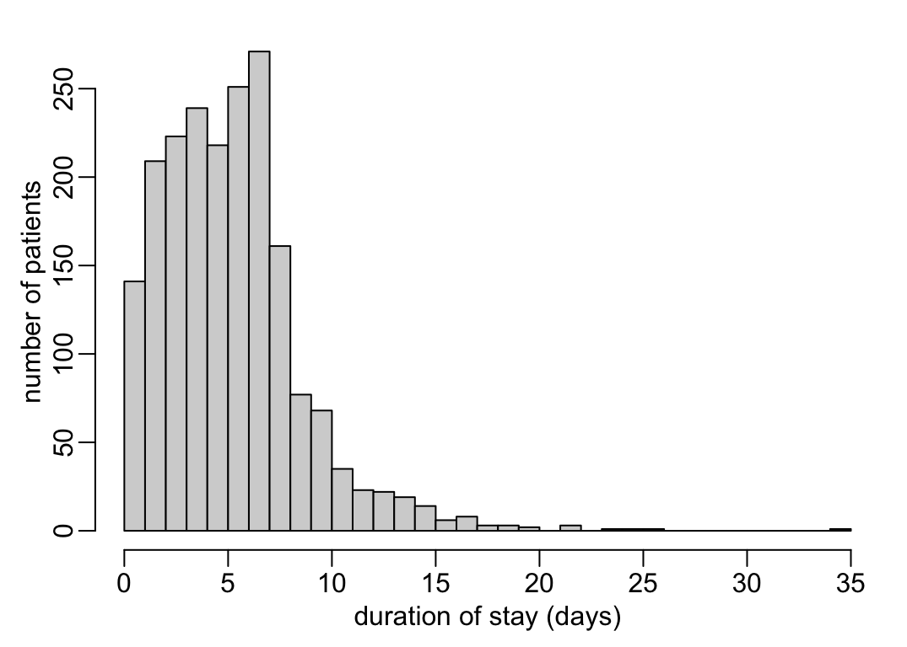
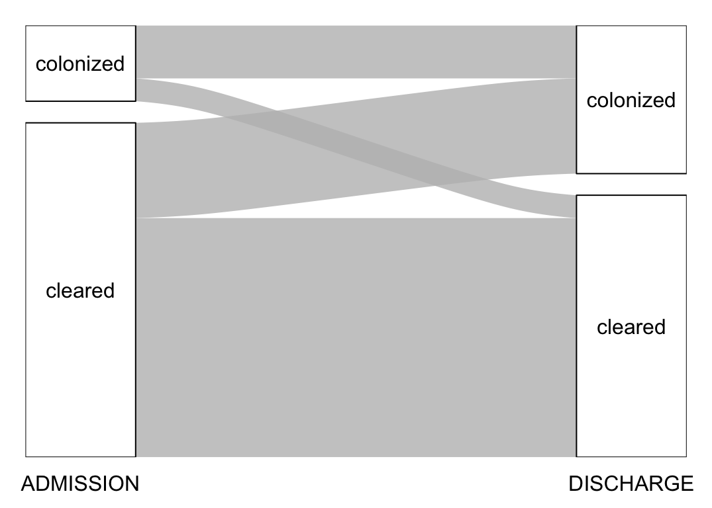
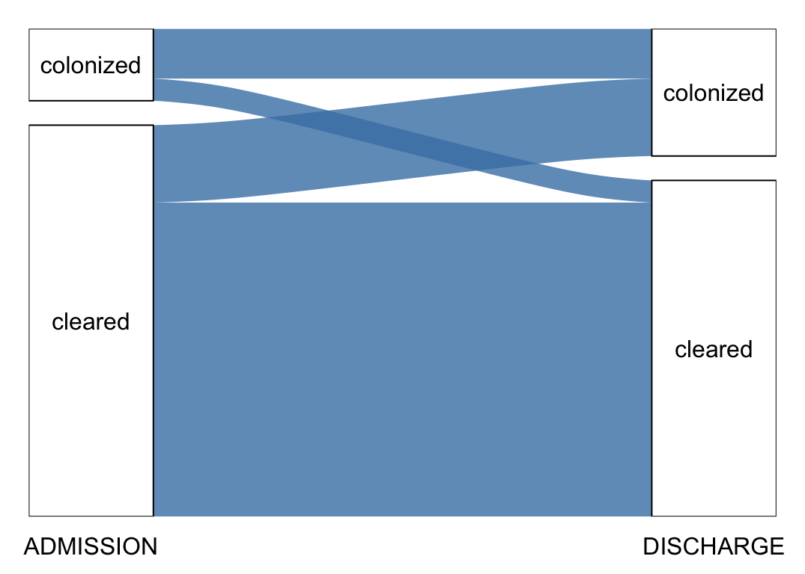
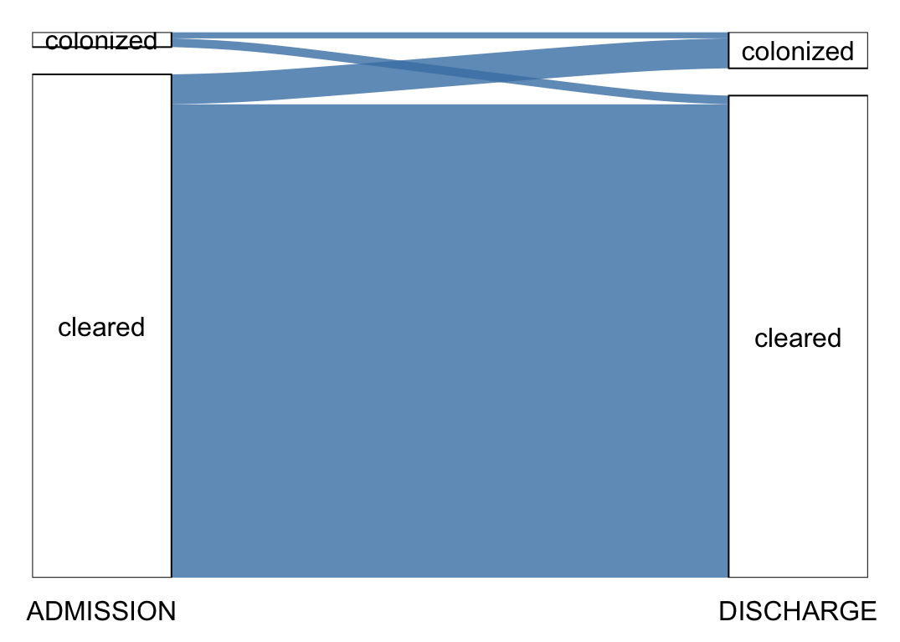
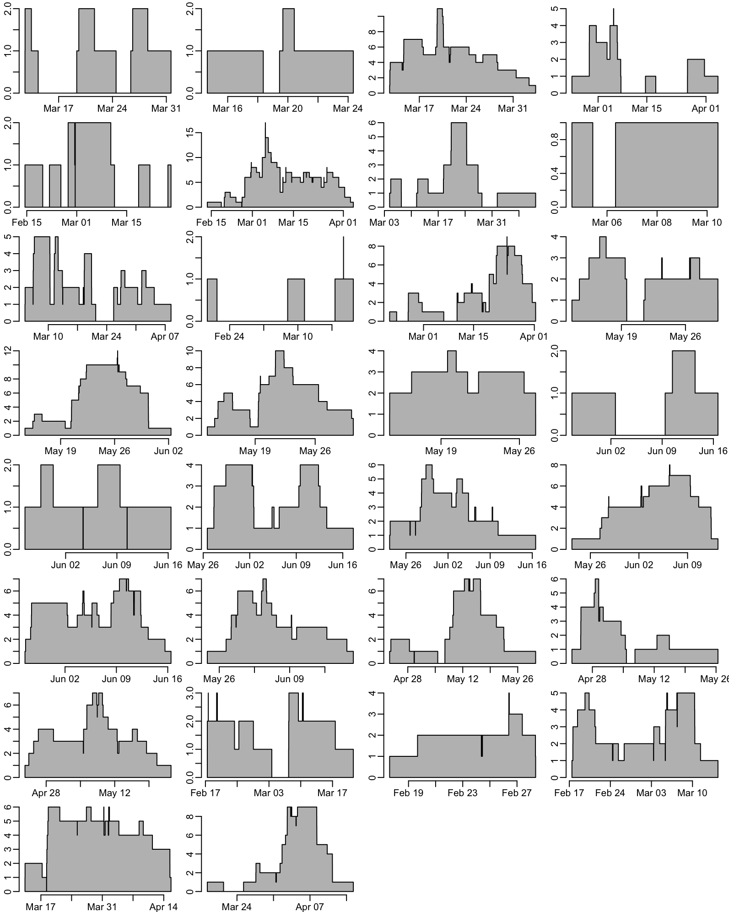
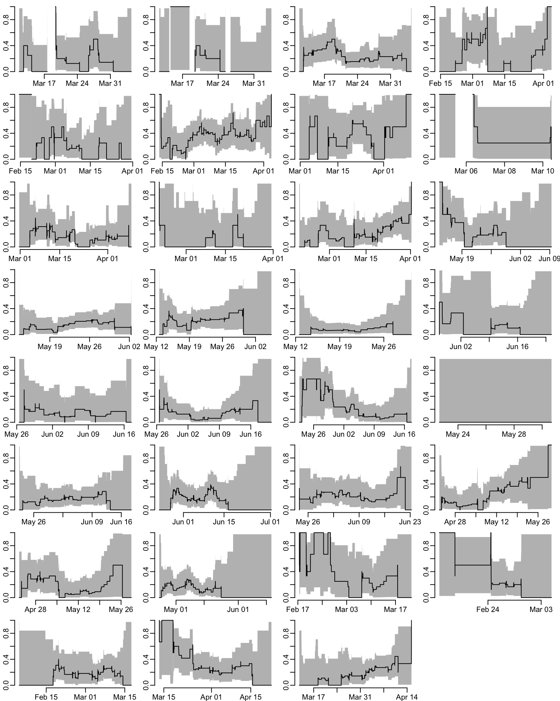
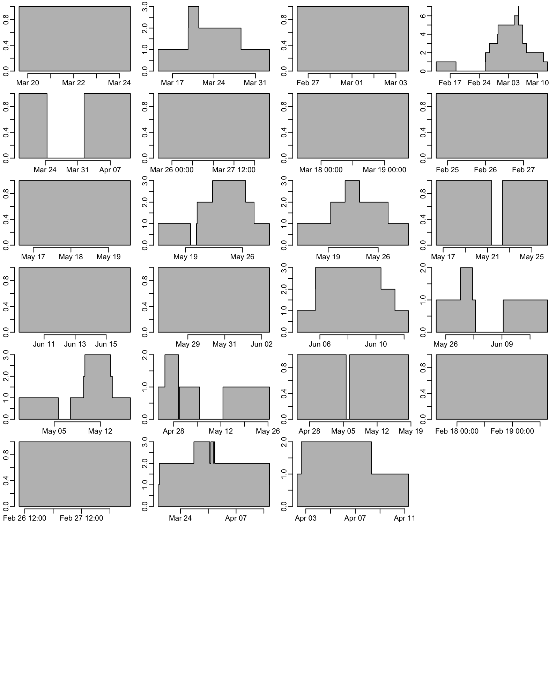
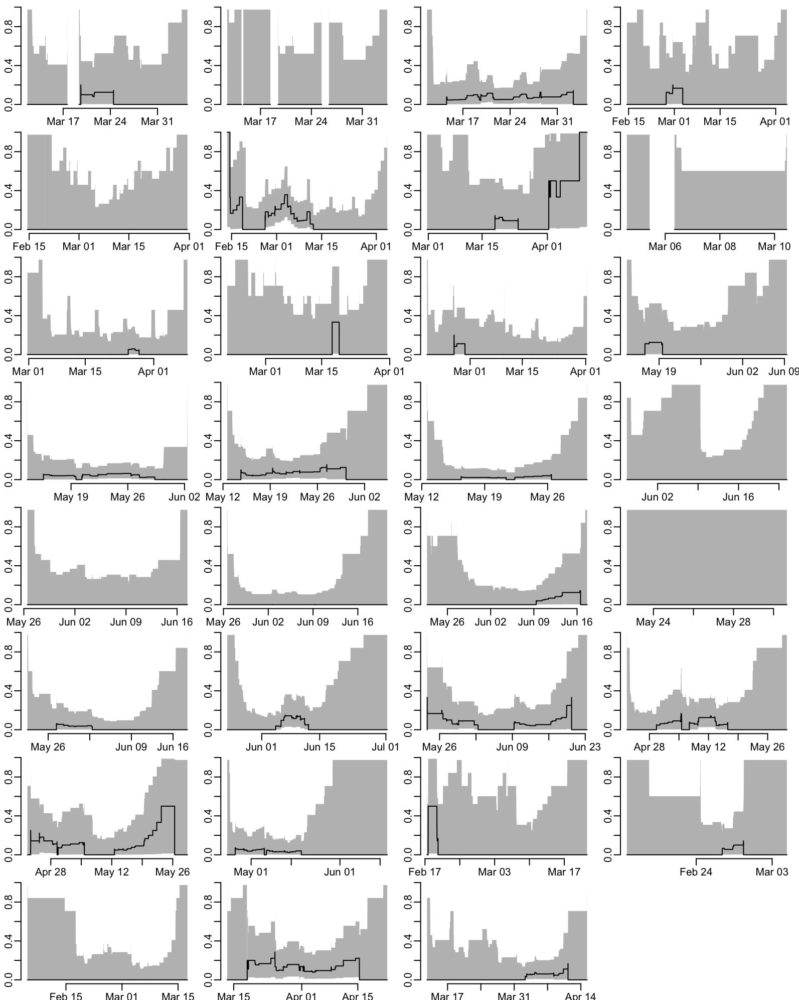

path2data <- paste0("/Users/", Sys.getenv("USER"), "/Library/CloudStorage/",
"OneDrive-OxfordUniversityClinicalResearchUnit/",
"GitHub/choisy/60HN/")60HN: CRE burden at admission and discharge
1 Constants
The folder that contains the data files:
The name of the file that contains the discharge dates of the patients that did not provide samples at discharge:
discharge_file <- "60HN - DischargeDate_no_discharge_sample_27Nov25.xlsx"The name of the CRF data file:
CRF_file <- "25-11-2025-_60HN_PATIENT_P1_Data.xls"The name of the MALDI-TOF data file:
MALDITOF_file <- paste0("60HN_LAB_ID_20251014_merged_Blue and",
" pink_confirmed by Maldi-TOF.xlsx")Number of minutes per day:
mpd <- 1440The number of cores to use for parallel computing:
nb_cores <- 112 Packages
Required packages:
required <- c("readxl", "purrr", "dplyr", "lubridate", "magrittr", "tidyr", "msm",
"rlang", "mgcv", "gratia", "alluvial")Installing those that are not installed yet:
to_install <- required[! required %in% installed.packages()[,"Package"]]
if (length(to_install)) install.packages(to_install)Loading the packages for interactive use:
invisible(sapply(required, library, character.only = TRUE))3 General functions
A function that pastes a vector of dates and a vector of times both in character format and returns a dttm vector:
as_datetime2 <- function(date, time) {
as_datetime2_ <- function(date, time) {
if (is.na(date)) return(NA)
if (is.na(time)) time <- "12:00:00" # if only time is missing, we fix it to noon
as_datetime(paste(date, time))
}
map2_vec(date, time, as_datetime2_)
}A function that converts a column col of a data frame x into a list-column (assuming that all the other columns have the same values across rows):
col2listcol <- function(x, col) {
x |>
select(- {{ col }}) |>
# head(1) |>
first() |>
bind_cols(tibble("{{col}}" := list(pull(x, {{ col }}))))
}A tuning of the hist() function:
hist2 <- function(x, ...) hist(x, floor(min(x)):ceiling(max(x)), main = NA, ...)A wrapper that formats the output of the binom.test() function:
binom_test <- function(x, n, ...) {
if (n < 1) return(c(estimate = NA, lower = NA, upper = NA))
binom.test(x, n, ...) |>
magrittr::extract(c("estimate", "conf.int")) |>
unlist() |>
setNames(c("estimate", "lower", "upper"))
}A tuning of the polygon() function:
polygon2 <- function(x, y1, y2, border = NA, ...) {
polygon(c(x, rev(x)), c(y1, rev(y2)), border = border, ...)
}Utility functions to convert coordinates to make a stairs plot style:
x_transform <- function(x) c(x[1], rep(x[-1], each = 2))
y_transform <- function(y) c(rep(head(y, -1), each = 2), last(y))A function that returns the indexes of the first values of consecutive NAs of a vector:
firstNA <- function(x) {
y <- which(is.na(x))
z <- diff(y) == 1
if (any(z)) return(y[-(which(z) + 1)])
y
}Example use:
firstNA(c(1, 3, 2, 5, 3, NA, NA, 3, 2, 5, NA, 5, 3, 2, 6, NA, NA, NA, 1, 3, 2, 5, 3))[1] 6 11 16A function that duplicates the first rows of a series of rows with NA values in the colNA column, and replaces the values of the col_sel columns with values of the row right before:
duplicate_NA_rows <- function(x, colNA = "estimate",
col_sel = c("denominator", "numerator", "estimate",
"lower", "upper")) {
x <- mutate(x, .id = row_number())
NA_ind <- firstNA(x[[colNA]])
duplicates <- x[NA_ind, ]
duplicates[, col_sel] <- x[NA_ind - 1, col_sel]
duplicates |>
bind_rows(x) |>
arrange(.id) |>
select(-.id)
}A function that splits a data frame x into a list of data frames according to the presence of missing values in the col column of the data frame:
remove_NAs <- function(x, col) {
x |>
mutate(col1 = as.numeric(is.na({{ col }})),
col2 = cumsum(col1)) |>
na.exclude() |>
group_by(col2) |>
group_split()
}Example use:
# carbs <- mtcars$carb
# carbs[c(8, 20:25)] <- NA
# mtcars$carb <- carbs
# remove_NAs(mtcars, carb)
# rm(mtcars)A tuning of the msm() function for a bi-state bi-directional case:
bsm <- function(formula, subject, data, ...) {
output <- do.call(msm::msm, c(list(formula = formula,
subject = substitute(subject),
data = data,
qmatrix = matrix(c(0:1, 1:0), 2)), list(...)))
output$call <- match.call()
output
}A function that bootstraps estimates of the fitted multistate model msm_fit where f is the function that generates the estimates and N is the number of bootstrap repetitions:
boot_msm <- function(msm_fit, f = qmatrix.msm, N = 1000, ...) {
msm_fit |>
boot.msm(function(x) f(x)$estimates, N, ...) |>
unlist() |>
array(dim = c(dim(msm_fit$Qmatrices$baseline), N))
}A function that generates statistic f estimates from bootstrap samples boot_samples outputed by boot_msm():
boot_stat <- function(boots_samples, f = sd) {
output <- apply(boots_samples, 1:2, f)
mat_names <- paste("State", 1:nrow(output))
colnames(output) <- mat_names
rownames(output) <- mat_names
output
}A function that generates a ci% confidence interval from bootstrap samples boot_samples outputed by boot_msm():
boot_ci <- function(boots_samples, ci = .95) {
ci <- (1 - ci) / 2
output <- apply(boots_samples, 1:2, function(x) quantile(x, c(ci, 1 - ci)))
mat_names <- paste("State", 1:ncol(output))
dimnames(output) <- list(rownames(output[, , 1]), mat_names, mat_names)
aperm(output, c(1, 3, 2))
}A function that computes lubridate-formatted durations:
time_diff <- function(x) as.duration(diff(x))A function that extracts the estimations with 95% CI of the rate of colonization and decolonization per 100 patient days:
bsm_estimations <- function(x, event_names = c("colonization", "clearance")) {
out <- cbind(matrix(x$estimates.t, 2), x$ci)
rownames(out) <- event_names
colnames(out) <- c("estimate", "lower", "upper")
100 * out
}A tuning of the alluvial() function:
alluvial2 <- function(x, print = TRUE, ...) {
alluvial(x[, 1:2], freq = x[[3]], ...)
if (print) return(x)
}4 Discharge dates
Loading the discharge dates for the patients who did not provide any sample at discharge:
(discharge_dates <- paste0(path2data, discharge_file) |>
read_excel() |>
mutate(across(`Discharge date`, ~ .x + hours(12))) |> # setting time to noon
select(-No, -SiteID, -`Discharge date (2)`))# A tibble: 96 × 2
USUBJID `Discharge date`
<chr> <dttm>
1 010-3-1-05 2025-02-23 12:00:00
2 010-1-1-10 2025-02-24 12:00:00
3 010-1-1-22 2025-02-25 12:00:00
4 010-1-1-26 2025-02-28 12:00:00
5 010-2-1-09 2025-03-06 12:00:00
6 010-2-1-22 2025-03-06 12:00:00
7 010-3-1-09 2025-03-06 12:00:00
8 010-3-1-39 2025-03-23 12:00:00
9 010-3-1-36 2025-03-17 12:00:00
10 010-3-1-42 2025-03-25 12:00:00
# ℹ 86 more rows5 CRF data
Reading the data:
file <- paste0(path2data, CRF_file)
sheets <- file |>
excel_sheets() |>
head(-1)
CRF <- sheets |>
map(read_excel, path = file) |>
setNames(sheets) |>
map(~ .x |> # de-duplication of records
group_by(USUBJID) |>
group_modify(~ .x |>
arrange(desc(entry)) |>
first()) |>
ungroup())5.1 Samples dates
The dates of samples collection at admission and discharge:
dates <- CRF |>
extract2("SCR") |>
select(USUBJID, SPEC_DATE_ADMISSION, SPEC_TIME_ADMISSION,
SPEC_DATE_DISCHARGE, SPEC_TIME_DISCHARGE) |>
mutate(ADMISSION = as_datetime2(SPEC_DATE_ADMISSION, SPEC_TIME_ADMISSION),
DISCHARGE = as_datetime2(SPEC_DATE_DISCHARGE, SPEC_TIME_DISCHARGE)) |>
select(- SPEC_DATE_ADMISSION, - SPEC_TIME_ADMISSION,
- SPEC_DATE_DISCHARGE, - SPEC_TIME_DISCHARGE)which gives:
dates# A tibble: 2,000 × 3
USUBJID ADMISSION DISCHARGE
<chr> <dttm> <dttm>
1 008-1-1-01 2025-03-11 16:30:00 2025-03-13 14:40:00
2 008-1-1-02 2025-03-12 10:00:00 2025-03-14 10:00:00
3 008-1-1-03 2025-03-12 09:50:00 2025-03-14 09:50:00
4 008-1-1-04 2025-03-12 13:45:00 2025-03-13 14:55:00
5 008-1-1-05 2025-03-12 13:40:00 2025-03-28 17:00:00
6 008-1-1-06 2025-03-12 12:30:00 2025-03-20 14:25:00
7 008-1-1-07 2025-03-12 14:40:00 2025-03-14 10:30:00
8 008-1-1-08 2025-03-12 14:30:00 2025-03-17 10:10:00
9 008-1-1-09 2025-03-12 14:50:00 2025-03-14 09:40:00
10 008-1-1-10 2025-03-12 15:10:00 2025-03-17 14:40:00
# ℹ 1,990 more rowsThe number of missing samples at discharge:
(nb_missing_samples <- dates |>
filter(is.na(DISCHARGE)) |>
nrow())[1] 96The number of samples at admission is:
(nb_samples_admission <- nrow(dates))[1] 2000The number of samples at discharge is:
(nb_samples_discharge <- nb_samples_admission - nb_missing_samples)[1] 1904The total number of samples is:
(nb_samples <- nb_samples_admission + nb_samples_discharge)[1] 3904Verifying that DISCHARGE is after ADMISSION:
dates |>
na.exclude() |>
filter(DISCHARGE < ADMISSION)# A tibble: 0 × 3
# ℹ 3 variables: USUBJID <chr>, ADMISSION <dttm>, DISCHARGE <dttm>5.2 Wards
From Huong:
“I just realize that there is one significant factor that would significantly contribute the force of infection (colonization) during hospitalization. This is the fact that patients from the same clinical ward can transmit CRE between one another. Therefore it would be best if the model can include the possibility within-ward transmission versus between within-hospital transmission. The ward type variable can identify the patients in the same ward or not. I think this should be the first priority to add.”
Generating the ward data:
(wards <- CRF$ADM |>
mutate(across(starts_with("WARD"), as.numeric),
ward = paste0(SITEID, WARD_1, WARD_2, WARD_3)) |>
arrange(SITEID) |>
select(USUBJID, ward))# A tibble: 2,000 × 2
USUBJID ward
<chr> <chr>
1 008-1-1-01 008100
2 008-1-1-02 008100
3 008-1-1-03 008100
4 008-1-1-04 008100
5 008-1-1-05 008100
6 008-1-1-06 008100
7 008-1-1-07 008100
8 008-1-1-08 008100
9 008-1-1-09 008100
10 008-1-1-10 008100
# ℹ 1,990 more rowsAn overview of the number of patients per wards:
nb_wards <- wards |>
group_by(ward) |>
tally()
nb_wards |>
arrange(desc(n)) |>
print(n = Inf)# A tibble: 31 × 2
ward n
<chr> <int>
1 010100 157
2 071110 120
3 073110 115
4 130100 110
5 159100 103
6 008100 102
7 156100 90
8 158001 89
9 160110 89
10 161100 89
11 159001 83
12 155110 81
13 157110 79
14 157001 70
15 155001 69
16 159010 64
17 158100 61
18 161001 61
19 010001 47
20 010010 46
21 130001 40
22 156010 40
23 160001 37
24 073001 35
25 008001 32
26 071001 25
27 160100 24
28 156001 20
29 008010 16
30 071100 5
31 157100 15.3 Enrolled
A function that computes the data for ward occupancy:
ward_occupancy <- function(x) {
f <- function(...) pivot_longer(..., names_to = "change", values_to = "date")
bind_rows(f(select(x, -DISCHARGE), ADMISSION),
f(select(x, -ADMISSION), DISCHARGE)) |>
arrange(date) |>
mutate(across(change, ~ setNames(c(1, -1), c("ADMISSION", "DISCHARGE"))[.x])) |>
group_by(date) |>
summarise(change = sum(change)) |>
ungroup() |>
mutate(occupancy = cumsum(change)) |>
select(-change)
}A function that plots a ward occupancy:
plot_occ <- function(x, y = NULL, ...) {
x |>
first() |>
mutate(occupancy = 0) |>
bind_rows(x) |>
with({
plot(date, occupancy, type = "n", ...)
polygon(c(head(date, 2), rep(tail(date, -2), each = 2)),
c(first(occupancy),
rep(tail(head(occupancy, -1), -1), each = 2),
last(occupancy)), col = "grey")
})
if (! is.null(y)) abline(v = y, col = "red")
}where x is an output from ward_occupancy() and y is the date of the last admission of the ward. Putting the ward and dates data together, using discharge_dates for patients who did not provide any sample at discharge (for the latter, the time is set to noon and, for those who have admission and discharge the same day with admission in the afternoon, discharge time is then set to one hour after admission):
(ward_dates <- wards |>
left_join(dates, "USUBJID") |>
left_join(discharge_dates, "USUBJID") |>
mutate(across(DISCHARGE, ~ if_else(is.na(.x), `Discharge date`, .x)),
across(DISCHARGE, ~ if_else(as_date(DISCHARGE) == as_date(ADMISSION) &
DISCHARGE < ADMISSION,
ADMISSION + hours(1), DISCHARGE))) |>
select(- `Discharge date`))# A tibble: 2,000 × 4
USUBJID ward ADMISSION DISCHARGE
<chr> <chr> <dttm> <dttm>
1 008-1-1-01 008100 2025-03-11 16:30:00 2025-03-13 14:40:00
2 008-1-1-02 008100 2025-03-12 10:00:00 2025-03-14 10:00:00
3 008-1-1-03 008100 2025-03-12 09:50:00 2025-03-14 09:50:00
4 008-1-1-04 008100 2025-03-12 13:45:00 2025-03-13 14:55:00
5 008-1-1-05 008100 2025-03-12 13:40:00 2025-03-28 17:00:00
6 008-1-1-06 008100 2025-03-12 12:30:00 2025-03-20 14:25:00
7 008-1-1-07 008100 2025-03-12 14:40:00 2025-03-14 10:30:00
8 008-1-1-08 008100 2025-03-12 14:30:00 2025-03-17 10:10:00
9 008-1-1-09 008100 2025-03-12 14:50:00 2025-03-14 09:40:00
10 008-1-1-10 008100 2025-03-12 15:10:00 2025-03-17 14:40:00
# ℹ 1,990 more rowsVerifying that DISCHARGE is after ADMISSION:
ward_dates |>
na.exclude() |>
filter(DISCHARGE < ADMISSION)# A tibble: 0 × 4
# ℹ 4 variables: USUBJID <chr>, ward <chr>, ADMISSION <dttm>, DISCHARGE <dttm>Computing the dates of last admissions for each ward:
last_admissions <- ward_dates |>
select(-DISCHARGE) |>
na.exclude() |>
group_by(ward) |>
group_modify(~ .x |>
arrange(ADMISSION) |>
last()) |>
ungroup() |>
pull(ADMISSION)Computing and plotting the ward occupancies:
opar <- par(mfrow = c(8, 4))
ward_dates |>
group_by(ward) |>
group_map(~ ward_occupancy(.x), .keep = TRUE) |>
walk2(last_admissions, plot_occ, ann = FALSE)
par(opar)
5.4 Durations
The distribution of the durations of stay in the wards:
ward_dates |>
mutate(duration = as.numeric(DISCHARGE - ADMISSION) / mpd) |>
pull(duration) |>
hist2(xlab = "duration of stay (days)", ylab = "number of patients")

Let’s see whether there any trend on the duration of stay across wards:
the_data <- ward_dates |>
mutate(duration = as.numeric(DISCHARGE - ADMISSION) / mpd) |>
left_join(nb_wards, "ward") |>
select(n, duration)
the_model <- gam(duration ~ s(n), Gamma, the_data, method = "REML") |>
fitted_values(tibble(n = seq(min(the_data$n), max(the_data$n), le = 512)))
with(the_data, plot(jitter(n, 5), duration, col = adjustcolor("black", .1), pch = 19,
xlab = "number of patients enrolled",
ylab = "duration of stay (days)"))
color_model <- "steelblue"
with(the_model, {
polygon2(n, .lower_ci, .upper_ci, col = adjustcolor(color_model, .3))
lines(n, .fitted, col = color_model)
})
6 MALDI-TOF data
Reading the MALDI-TOF data:
unidentified <- c("No organism identification possible",
"No peaks found", "no peaks found")
(MALDITOF <- path2data |>
paste0(MALDITOF_file) |>
read_excel() |>
select(USUBJID, SampleSchedule, Identification_MALDITOF) |>
unique() |>
mutate(across(Identification_MALDITOF,
~ if_else(.x %in% unidentified, "unidentified", .x))))# A tibble: 1,210 × 3
USUBJID SampleSchedule Identification_MALDITOF
<chr> <chr> <chr>
1 010-1-1-01 ADMISSION Klebsiella pneumoniae
2 160-1-1-09 ADMISSION Enterobacter hormaechei
3 160-2-1-06 ADMISSION Klebsiella pneumoniae
4 160-2-1-04 ADMISSION Enterobacter hormaechei
5 160-2-1-04 DISCHARGE Enterobacter hormaechei
6 010-1-1-06 DISCHARGE Enterobacter cloacae
7 010-1-1-01 DISCHARGE Klebsiella pneumoniae
8 010-1-1-14 ADMISSION Enterococcus faecium
9 010-1-1-14 ADMISSION Klebsiella aerogenes
10 160-2-1-06 DISCHARGE Klebsiella pneumoniae
# ℹ 1,200 more rowsNumber of isolates not identified and identified:
MALDITOF |>
mutate(identification = Identification_MALDITOF != "unidentified") |>
group_by(identification) |>
tally()# A tibble: 2 × 2
identification n
<lgl> <int>
1 FALSE 26
2 TRUE 1184The list of positive samples:
(MALDITOF_samples <- MALDITOF |>
select(- Identification_MALDITOF) |>
unique())# A tibble: 1,055 × 2
USUBJID SampleSchedule
<chr> <chr>
1 010-1-1-01 ADMISSION
2 160-1-1-09 ADMISSION
3 160-2-1-06 ADMISSION
4 160-2-1-04 ADMISSION
5 160-2-1-04 DISCHARGE
6 010-1-1-06 DISCHARGE
7 010-1-1-01 DISCHARGE
8 010-1-1-14 ADMISSION
9 160-2-1-06 DISCHARGE
10 010-3-1-01 DISCHARGE
# ℹ 1,045 more rowsThe number of positive samples at admission is:
(nb_positive_samples_admission <- MALDITOF_samples |>
filter(SampleSchedule == "ADMISSION") |>
nrow())[1] 364The number of positive samples at admission is:
(nb_positive_samples_discharge <- MALDITOF_samples |>
filter(SampleSchedule == "DISCHARGE") |>
nrow())[1] 691The number of positive samples is:
(nb_positive_samples <- nb_positive_samples_admission + nb_positive_samples_discharge)[1] 1055Which represents 27.02 % of samples. The distribution of bacteria across the samples:
prevalences <- function(x, nb_positive_samples, nb_samples) {
x |>
group_by(Identification_MALDITOF) |>
tally() |>
mutate(`% +ve smpls` = round(100 * n / nb_positive_samples, 1),
`% all smpls` = round(100 * n / nb_samples, 1)) |>
arrange(desc(n))
}Prevalences across all samples:
(prevalences_all <- prevalences(MALDITOF, nb_positive_samples, nb_samples))# A tibble: 23 × 4
Identification_MALDITOF n `% +ve smpls` `% all smpls`
<chr> <int> <dbl> <dbl>
1 Escherichia coli 827 78.4 21.2
2 Klebsiella pneumoniae 189 17.9 4.8
3 Enterobacter hormaechei 71 6.7 1.8
4 unidentified 26 2.5 0.7
5 Enterococcus faecium 25 2.4 0.6
6 Enterobacter cloacae 24 2.3 0.6
7 Klebsiella aerogenes 10 0.9 0.3
8 Aeromonas caviae 7 0.7 0.2
9 Citrobacter freundii 6 0.6 0.2
10 Enterobacter kobei 4 0.4 0.1
# ℹ 13 more rowsThe list of all the bacteria in the MALDITOF results:
(bugs <- prevalences_all |>
filter(Identification_MALDITOF != "unidentified") |>
pull(Identification_MALDITOF) |>
sort()) [1] "Aeromonas caviae" "Aeromonas hydrophila"
[3] "Aeromonas veronii" "Citrobacter braakii"
[5] "Citrobacter freundii" "Cronobacter sp."
[7] "Cupriavidus gilardii" "Enterobacter bugandensis"
[9] "Enterobacter cloacae" "Enterobacter hormaechei"
[11] "Enterobacter kobei" "Enterobacter roggenkampii"
[13] "Enterococcus faecium" "Escherichia coli"
[15] "Escherichia hermannii" "Klebsiella aerogenes"
[17] "Klebsiella oxytoca" "Klebsiella pneumoniae"
[19] "Klebsiella variicola" "Kluyvera georgiana"
[21] "Pseudomonas putida" "Raoultella ornithinolytica"Prevalences at admission:
(prevalences_admission <- MALDITOF |>
filter(SampleSchedule == "ADMISSION") |>
prevalences(nb_positive_samples_admission, nb_samples_admission))# A tibble: 13 × 4
Identification_MALDITOF n `% +ve smpls` `% all smpls`
<chr> <int> <dbl> <dbl>
1 Escherichia coli 304 83.5 15.2
2 Klebsiella pneumoniae 56 15.4 2.8
3 Enterobacter hormaechei 17 4.7 0.8
4 Enterococcus faecium 7 1.9 0.3
5 unidentified 5 1.4 0.2
6 Klebsiella aerogenes 4 1.1 0.2
7 Enterobacter cloacae 3 0.8 0.1
8 Aeromonas caviae 2 0.5 0.1
9 Aeromonas hydrophila 1 0.3 0
10 Aeromonas veronii 1 0.3 0
11 Enterobacter bugandensis 1 0.3 0
12 Enterobacter kobei 1 0.3 0
13 Escherichia hermannii 1 0.3 0 Prevalences at discharge:
(prevalences_discharge <- MALDITOF |>
filter(SampleSchedule == "DISCHARGE") |>
prevalences(nb_positive_samples_discharge, nb_samples_discharge))# A tibble: 22 × 4
Identification_MALDITOF n `% +ve smpls` `% all smpls`
<chr> <int> <dbl> <dbl>
1 Escherichia coli 523 75.7 27.5
2 Klebsiella pneumoniae 133 19.2 7
3 Enterobacter hormaechei 54 7.8 2.8
4 Enterobacter cloacae 21 3 1.1
5 unidentified 21 3 1.1
6 Enterococcus faecium 18 2.6 0.9
7 Citrobacter freundii 6 0.9 0.3
8 Klebsiella aerogenes 6 0.9 0.3
9 Aeromonas caviae 5 0.7 0.3
10 Enterobacter kobei 3 0.4 0.2
# ℹ 12 more rowsLet’s compare the prevalences at admission and discharge:
prev_adm_disch <- prevalences_all |>
select(Identification_MALDITOF) |>
left_join(prevalences_admission) |>
left_join(prevalences_discharge,
"Identification_MALDITOF", suffix = c(" (A)", " (D)")) |>
mutate(across(everything(), ~ replace_na(.x, 0)))Joining with `by = join_by(Identification_MALDITOF)`The number of positive samples:
prev_adm_disch |>
select(Identification_MALDITOF, starts_with("n"))# A tibble: 23 × 3
Identification_MALDITOF `n (A)` `n (D)`
<chr> <int> <int>
1 Escherichia coli 304 523
2 Klebsiella pneumoniae 56 133
3 Enterobacter hormaechei 17 54
4 unidentified 5 21
5 Enterococcus faecium 7 18
6 Enterobacter cloacae 3 21
7 Klebsiella aerogenes 4 6
8 Aeromonas caviae 2 5
9 Citrobacter freundii 0 6
10 Enterobacter kobei 1 3
# ℹ 13 more rowsTheir proportion among positive samples:
prev_adm_disch |>
select(Identification_MALDITOF, starts_with("% +"))# A tibble: 23 × 3
Identification_MALDITOF `% +ve smpls (A)` `% +ve smpls (D)`
<chr> <dbl> <dbl>
1 Escherichia coli 83.5 75.7
2 Klebsiella pneumoniae 15.4 19.2
3 Enterobacter hormaechei 4.7 7.8
4 unidentified 1.4 3
5 Enterococcus faecium 1.9 2.6
6 Enterobacter cloacae 0.8 3
7 Klebsiella aerogenes 1.1 0.9
8 Aeromonas caviae 0.5 0.7
9 Citrobacter freundii 0 0.9
10 Enterobacter kobei 0.3 0.4
# ℹ 13 more rowsTheir proportions among all samples:
prev_adm_disch |>
select(Identification_MALDITOF, starts_with("% a"))# A tibble: 23 × 3
Identification_MALDITOF `% all smpls (A)` `% all smpls (D)`
<chr> <dbl> <dbl>
1 Escherichia coli 15.2 27.5
2 Klebsiella pneumoniae 2.8 7
3 Enterobacter hormaechei 0.8 2.8
4 unidentified 0.2 1.1
5 Enterococcus faecium 0.3 0.9
6 Enterobacter cloacae 0.1 1.1
7 Klebsiella aerogenes 0.2 0.3
8 Aeromonas caviae 0.1 0.3
9 Citrobacter freundii 0 0.3
10 Enterobacter kobei 0 0.2
# ℹ 13 more rowsThe list of bacteria absent at admission and present at discharge:
prev_adm_disch |>
select(Identification_MALDITOF, starts_with("n")) |>
filter(`n (A)` == 0)# A tibble: 10 × 3
Identification_MALDITOF `n (A)` `n (D)`
<chr> <int> <int>
1 Citrobacter freundii 0 6
2 Raoultella ornithinolytica 0 3
3 Kluyvera georgiana 0 2
4 Citrobacter braakii 0 1
5 Cronobacter sp. 0 1
6 Cupriavidus gilardii 0 1
7 Enterobacter roggenkampii 0 1
8 Klebsiella oxytoca 0 1
9 Klebsiella variicola 0 1
10 Pseudomonas putida 0 1The list of bacteria present at admission and absent at discharge:
prev_adm_disch |>
select(Identification_MALDITOF, starts_with("n")) |>
filter(`n (D)` == 0)# A tibble: 1 × 3
Identification_MALDITOF `n (A)` `n (D)`
<chr> <int> <int>
1 Enterobacter bugandensis 1 0Let’s now look at changes in colonization status between admission and discharge. The following function prepares the data for an alluvial plot:
make_alluvial_data <- function(x) {
positive_samples <- x |>
mutate(state = 2) |> # the exact value here does not matter
pivot_wider(names_from = SampleSchedule, values_from = state) |>
mutate(across(-USUBJID, ~ ! is.na(.x)))
dates |>
filter(! is.na(DISCHARGE)) |>
select(USUBJID) |>
left_join(positive_samples, "USUBJID") |>
mutate(across(-USUBJID, ~ replace_na(.x, FALSE)),
across(-USUBJID, ~ c("cleared", "colonized")[as.numeric(.x) + 1])) |>
group_by(ADMISSION, DISCHARGE) |>
tally() |>
ungroup()
}The following function is a wrapper around the above function and the the alluvial2() function that computes the table of changes and plot the alluvial plot for a given set of bacteria to consider:
plot_changes <- function(bacteria = "all") {
if (bacteria == "all") {
the_data <- MALDITOF_samples
} else {
the_data <- MALDITOF |>
filter(Identification_MALDITOF %in% bacteria) |>
select(- Identification_MALDITOF)
}
the_data |>
make_alluvial_data() |>
alluvial2(col = "grey", alpha = .8, border = NA)
}Let’s use this function to look at some example:
plot_changes()# A tibble: 4 × 3
ADMISSION DISCHARGE n
<chr> <chr> <int>
1 cleared cleared 1107
2 cleared colonized 445
3 colonized cleared 106
4 colonized colonized 246

plot_changes("Escherichia coli")# A tibble: 4 × 3
ADMISSION DISCHARGE n
<chr> <chr> <int>
1 cleared cleared 1290
2 cleared colonized 318
3 colonized cleared 91
4 colonized colonized 205

plot_changes("Klebsiella pneumoniae")# A tibble: 4 × 3
ADMISSION DISCHARGE n
<chr> <chr> <int>
1 cleared cleared 1739
2 cleared colonized 110
3 colonized cleared 32
4 colonized colonized 23

7 CRE exposure
7.1 All CRE
The number of enrolled patient with CRE at admission as a function of time for each ward:
opar <- par(mfrow = c(8, 4))
CRE_admission <- MALDITOF_samples |>
filter(SampleSchedule == "ADMISSION") |>
pull(USUBJID)
ward_dates |>
filter(USUBJID %in% CRE_admission) |>
group_by(ward) |>
group_map(~ ward_occupancy(.x), .keep = TRUE) |>
walk(plot_occ, ann = FALSE)
par(opar)

A function that plots the prevalence estimate estimate and lower and upper bonds lower and upper of the confidence interval from a data frame of a ward:
plot_prevalence <- function(x) {
with(x, plot(x_transform(date), y_transform(estimate),
type = "n", ann = FALSE, ylim = 0:1))
x |>
duplicate_NA_rows() |>
remove_NAs(estimate) |>
map(~ with(.x, polygon2(x_transform(date), y_transform(lower), y_transform(upper),
col = "grey")))
with(x, lines(x_transform(date), y_transform(estimate)))
}Computing the proportions of CRE positives as a function of time for each ward:
numerator_df <- ward_dates |>
filter(USUBJID %in% CRE_admission) |>
group_by(ward) |>
group_modify(~ ward_occupancy(.x)) |>
rename(numerator = occupancy)
proportion_CRE <- ward_dates |>
group_by(ward) |>
group_modify(~ ward_occupancy(.x)) |>
ungroup() |>
rename(denominator = occupancy) |>
left_join(numerator_df, c("ward", "date")) |>
fill(numerator) |>
mutate(across(numerator, ~ replace_na(.x, 0)),
Clopper_Pearson = map2(numerator, denominator, binom_test)) |>
unnest_wider(Clopper_Pearson)Proportion of enrolled patients that are CRE positive at admission as a function of time for each ward:
opar <- par(mfrow = c(8, 4))
proportion_CRE |>
group_by(ward) |>
group_walk(~ plot_prevalence(.x))
par(opar)

7.2 K. pneumoniae
Here we have the same plots as for the previous section but for K. pneumoniae only. First the number of enrolled patient with CRE K. pneumoniae at admission as a function of time for each ward:
opar <- par(mfrow = c(8, 4))
Kp_admission <- MALDITOF |>
filter(SampleSchedule == "ADMISSION",
Identification_MALDITOF == "Klebsiella pneumoniae") |>
pull(USUBJID)
ward_dates |>
filter(USUBJID %in% Kp_admission) |>
group_by(ward) |>
group_map(~ ward_occupancy(.x), .keep = TRUE) |>
walk(plot_occ, ann = FALSE)
par(opar)

Proportion of enrolled patients that are CRE K. pneumoniae positive at admission as a function of time for each ward:
numerator_df <- ward_dates |>
filter(USUBJID %in% Kp_admission) |>
group_by(ward) |>
group_modify(~ ward_occupancy(.x)) |>
rename(numerator = occupancy)
opar <- par(mfrow = c(8, 4))
ward_dates |>
group_by(ward) |>
group_modify(~ ward_occupancy(.x)) |>
ungroup() |>
rename(denominator = occupancy) |>
left_join(numerator_df, c("ward", "date")) |>
fill(numerator) |>
mutate(across(numerator, ~ replace_na(.x, 0)),
Clopper_Pearson = map2(numerator, denominator, binom_test)) |>
unnest_wider(Clopper_Pearson) |>
group_by(ward) |>
group_walk(~ plot_prevalence(.x))
par(opar)

8 Data preparation
8.1 Minimum data
A function that generates the presence/absence data (coded as 1/2 here) from the output x of the MALDITOF where id is the column of x that contains the patient ID, time_point is the column of x that contains the time point of the sample (e.g. ADMISSION or DISCHARGE), identification is the column of x that contains the bacteria identified by the MALDITOF and bacteria is a vector of characters that contains the names of the bacteria that we want to test the presence of.
presence_abscence <- function(x, id, time_point, identification, bacteria) {
x |>
group_by({{ id }}, {{ time_point }}) |>
group_modify(~ col2listcol(.x, {{ identification }})) |>
ungroup() |>
mutate(state = map_lgl({{ identification }}, ~ any(bacteria %in% .x)) + 1) |>
select(- {{ identification }}) |>
arrange({{ id }}, {{ time_point }})
}The following function adds the samples that were tested negative to the output x of presence_abscence() where y is the samples dates as generated in Section 5.1.
add_negatives <- function(x, y, id, time_point) {
tp <- as_name(enquo(time_point))
y |>
pivot_longer(- {{ id }}, names_to = tp) |>
left_join(x, c(as_name(enquo(id)), tp)) |>
mutate(across(state, ~ replace_na(., 1))) |>
na.exclude() # remove the absence of samples
}A function that selects patients from x who have samples from at least 2 time points:
select2time_points <- function(x, id) {
id_with_2obs <- x |>
pull({{ id }}) |>
table() |>
is_greater_than(1) |>
which() |>
names()
filter(x, {{ id }} %in% id_with_2obs)
}where id is the column of x that contains the patients IDs. A function that combines state and time data:
state_time <- function(state, time, id, admission, discharge, time_point) {
time |>
mutate("{{discharge}}" := as.numeric({{ discharge }} - {{ admission }}) / mpd,
"{{admission}}" := 0) |>
pivot_longer(- {{ id }},
names_to = as_name(enquo(time_point)), values_to = "days") |>
left_join(x = {{ state }}, y = _,
c(as_name(enquo(id)), as_name(enquo(time_point))))
}The following function puts the 4 above functions together:
msm_data <- function(x, y, id, time_point, identification, bacteria,
admission, discharge) {
x |>
presence_abscence({{ id }}, {{ time_point }}, {{ identification }}, bacteria) |>
add_negatives(y, {{ id }}, {{ time_point }}) |>
select2time_points({{ id }}) |>
state_time(y, {{ id }}, {{ admission }}, {{ discharge }}, {{ time_point }}) |>
select({{ id }}, state, days)
}where
xis the MALDITOF data as read in section Section 6yis the dates of samples collections as generated from the CRF in section Section 5.1idis the unquoted name of the patient ID variable that should be the same inxandytime_pointis the unquoted name of the variable ofxthat contains the time point information (for exampleADMISSIONandDISCHARGE)identificationis the unquoted name of the variable ofxthat contains the name of the identified bacteriabacteriais a vector of quoted names of bacteria we want to generate the data foradmissionis the unquoted name of the variable ofythat contains the dates of admissionsdischargeis the unquoted name of the variable ofythat contains the dates of discharge
The output of this function is a data frame with 3 columns:
- the
idpatient ID - the
statevariable, with1and2for not “not infected” and “infected” respectively - the
dayscolumns where zeros refers to admissions and non-zero values are the times of discharge in days counting from admission
A tuning of msm_data():
msm_data2 <- function(bacteria) msm_data(MALDITOF, dates, USUBJID, SampleSchedule,
Identification_MALDITOF, bacteria, ADMISSION,
DISCHARGE)8.2 Covariates
The following function adds to the output x of the msm_data() function the covariate otherCRE that tells whether at admission the patient had a CRE other than the set of bacteria:
add_other_CRE_at_admission <- function(x, bacteria) {
MALDITOF |>
filter(SampleSchedule == "ADMISSION",
! Identification_MALDITOF %in% bacteria) |>
mutate(otherCRE = TRUE) |>
select(USUBJID, otherCRE) |>
unique() |>
left_join(x = x, y = _, "USUBJID") |>
mutate(across(otherCRE, ~ replace_na(.x, FALSE)))
}This function relies on the MALDITOF data frame generated in section Section 6. The following function adds to the output x of the msm_data() function the ward ID covariate:
add_ward <- function(x) left_join(x, wards, "USUBJID")This function relies on the wards data frame generated in the section Section 5.2. The following function adds to the output x of the add_ward() function the covariates estimate, lower and upper that are the temporal means of the proportions of enrolled patient that are CRE positive in the ward for the duration of the study:
add_CRE_prevalence_in_ward <- function(x) {
ward_means <- function(y) {
total_duration <- time_diff(range(y$date))
y |>
mutate(weight = time_diff(c(date, NA)) / total_duration) |>
summarise(across(c(estimate, lower, upper),
~ sum(replace_na(.x, 0) * weight, na.rm = TRUE)))
}
proportion_CRE |>
group_by(ward) |>
group_modify(~ ward_means(.x)) |>
ungroup() |>
left_join(x = x, y = _, "ward")
}This function relies on the proportion_CRE data frame generated in the section Section 7.1.
9 K. pneumoniae
9.1 Preparing the data
Generating the presence/absence of K. pneumoniae:
K_pneumoniae_raw <- presence_abscence(MALDITOF, USUBJID, SampleSchedule,
Identification_MALDITOF, "Klebsiella pneumoniae")Which gives:
K_pneumoniae_raw# A tibble: 1,055 × 3
USUBJID SampleSchedule state
<chr> <chr> <dbl>
1 008-1-1-05 ADMISSION 1
2 008-1-1-05 DISCHARGE 2
3 008-1-1-07 ADMISSION 1
4 008-1-1-07 DISCHARGE 1
5 008-1-1-08 ADMISSION 1
6 008-1-1-08 DISCHARGE 1
7 008-1-1-100 DISCHARGE 1
8 008-1-1-14 ADMISSION 1
9 008-1-1-14 DISCHARGE 1
10 008-1-1-15 DISCHARGE 1
# ℹ 1,045 more rowsWhere 1 is absence and 2 is presence. Adding the samples with negative culture:
(K_pneumoniae_raw_a <- add_negatives(K_pneumoniae_raw, dates, USUBJID, SampleSchedule))# A tibble: 3,904 × 4
USUBJID SampleSchedule value state
<chr> <chr> <dttm> <dbl>
1 008-1-1-01 ADMISSION 2025-03-11 16:30:00 1
2 008-1-1-01 DISCHARGE 2025-03-13 14:40:00 1
3 008-1-1-02 ADMISSION 2025-03-12 10:00:00 1
4 008-1-1-02 DISCHARGE 2025-03-14 10:00:00 1
5 008-1-1-03 ADMISSION 2025-03-12 09:50:00 1
6 008-1-1-03 DISCHARGE 2025-03-14 09:50:00 1
7 008-1-1-04 ADMISSION 2025-03-12 13:45:00 1
8 008-1-1-04 DISCHARGE 2025-03-13 14:55:00 1
9 008-1-1-05 ADMISSION 2025-03-12 13:40:00 1
10 008-1-1-05 DISCHARGE 2025-03-28 17:00:00 2
# ℹ 3,894 more rowsSelecting the patients that have samples from at least 2 time points:
(K_pneumoniae <- select2time_points(K_pneumoniae_raw_a, USUBJID))# A tibble: 3,808 × 4
USUBJID SampleSchedule value state
<chr> <chr> <dttm> <dbl>
1 008-1-1-01 ADMISSION 2025-03-11 16:30:00 1
2 008-1-1-01 DISCHARGE 2025-03-13 14:40:00 1
3 008-1-1-02 ADMISSION 2025-03-12 10:00:00 1
4 008-1-1-02 DISCHARGE 2025-03-14 10:00:00 1
5 008-1-1-03 ADMISSION 2025-03-12 09:50:00 1
6 008-1-1-03 DISCHARGE 2025-03-14 09:50:00 1
7 008-1-1-04 ADMISSION 2025-03-12 13:45:00 1
8 008-1-1-04 DISCHARGE 2025-03-13 14:55:00 1
9 008-1-1-05 ADMISSION 2025-03-12 13:40:00 1
10 008-1-1-05 DISCHARGE 2025-03-28 17:00:00 2
# ℹ 3,798 more rowsMaking the dataset for the multistate modelling:
(Kp_msm <- state_time(K_pneumoniae, dates, USUBJID,
ADMISSION, DISCHARGE, SampleSchedule))# A tibble: 3,808 × 5
USUBJID SampleSchedule value state days
<chr> <chr> <dttm> <dbl> <dbl>
1 008-1-1-01 ADMISSION 2025-03-11 16:30:00 1 0
2 008-1-1-01 DISCHARGE 2025-03-13 14:40:00 1 1.92
3 008-1-1-02 ADMISSION 2025-03-12 10:00:00 1 0
4 008-1-1-02 DISCHARGE 2025-03-14 10:00:00 1 2
5 008-1-1-03 ADMISSION 2025-03-12 09:50:00 1 0
6 008-1-1-03 DISCHARGE 2025-03-14 09:50:00 1 2
7 008-1-1-04 ADMISSION 2025-03-12 13:45:00 1 0
8 008-1-1-04 DISCHARGE 2025-03-13 14:55:00 1 1.05
9 008-1-1-05 ADMISSION 2025-03-12 13:40:00 1 0
10 008-1-1-05 DISCHARGE 2025-03-28 17:00:00 2 16.1
# ℹ 3,798 more rowsAlternatively, we can do all at once with this function:
Kp_msm <- msm_data(MALDITOF, dates, USUBJID, SampleSchedule, Identification_MALDITOF,
"Klebsiella pneumoniae", ADMISSION, DISCHARGE)which gives:
Kp_msm# A tibble: 3,808 × 3
USUBJID state days
<chr> <dbl> <dbl>
1 008-1-1-01 1 0
2 008-1-1-01 1 1.92
3 008-1-1-02 1 0
4 008-1-1-02 1 2
5 008-1-1-03 1 0
6 008-1-1-03 1 2
7 008-1-1-04 1 0
8 008-1-1-04 1 1.05
9 008-1-1-05 1 0
10 008-1-1-05 2 16.1
# ℹ 3,798 more rowsOr, even simpler here:
Kp_msm <- msm_data2("Klebsiella pneumoniae")Adding covariates:
(Kp_msm_cov <- Kp_msm |>
add_other_CRE_at_admission("Klebsiella pneumoniae") |>
add_ward() |>
add_CRE_prevalence_in_ward())# A tibble: 3,808 × 8
USUBJID state days otherCRE ward estimate lower upper
<chr> <dbl> <dbl> <lgl> <chr> <dbl> <dbl> <dbl>
1 008-1-1-01 1 0 FALSE 008100 0.231 0.0757 0.538
2 008-1-1-01 1 1.92 FALSE 008100 0.231 0.0757 0.538
3 008-1-1-02 1 0 FALSE 008100 0.231 0.0757 0.538
4 008-1-1-02 1 2 FALSE 008100 0.231 0.0757 0.538
5 008-1-1-03 1 0 FALSE 008100 0.231 0.0757 0.538
6 008-1-1-03 1 2 FALSE 008100 0.231 0.0757 0.538
7 008-1-1-04 1 0 FALSE 008100 0.231 0.0757 0.538
8 008-1-1-04 1 1.05 FALSE 008100 0.231 0.0757 0.538
9 008-1-1-05 1 0 TRUE 008100 0.231 0.0757 0.538
10 008-1-1-05 2 16.1 TRUE 008100 0.231 0.0757 0.538
# ℹ 3,798 more rows9.2 Multi-state modelling
9.2.1 Basic operations
Defining the structure of the \(Q\) matrix:
Q <- rbind(c(0, 1),
c(1, 0))Initial values of the \(Q\) matrix:
(Q_crude <- crudeinits.msm(state ~ days, USUBJID, Q, Kp_msm)) [,1] [,2]
[1,] -0.0113743 0.0113743
[2,] 0.0845829 -0.0845829Fitting a simple model without any covariate:
(Kp_msm_fit <- msm(state ~ days, USUBJID, Kp_msm, Q))
Call:
msm(formula = state ~ days, subject = USUBJID, data = Kp_msm, qmatrix = Q)
Maximum likelihood estimates
Transition intensities
Baseline
State 1 - State 1 -0.0198 (-0.02570,-0.01526)
State 1 - State 2 0.0198 ( 0.01526, 0.02570)
State 2 - State 1 0.1622 ( 0.10926, 0.24078)
State 2 - State 2 -0.1622 (-0.24078,-0.10926)
-2 * log-likelihood: 891.3579 Or we call simply do:
(Kp_msm_fit <- bsm(state ~ days, USUBJID, Kp_msm))
Call:
bsm(formula = state ~ days, subject = USUBJID, data = Kp_msm)
Maximum likelihood estimates
Transition intensities
Baseline
State 1 - State 1 -0.0198 (-0.02570,-0.01526)
State 1 - State 2 0.0198 ( 0.01526, 0.02570)
State 2 - State 1 0.1622 ( 0.10926, 0.24078)
State 2 - State 2 -0.1622 (-0.24078,-0.10926)
-2 * log-likelihood: 891.3579 Estimated transition intensity \(Q\) matrix:
qmatrix.msm(Kp_msm_fit) State 1 State 2
State 1 -0.0198 (-0.02570,-0.01526) 0.0198 ( 0.01526, 0.02570)
State 2 0.1622 ( 0.10926, 0.24078) -0.1622 (-0.24078,-0.10926)Estimated transition probability \(P\) matrix per day:
pmatrix.msm(Kp_msm_fit) State 1 State 2
State 1 0.9818947 0.01810533
State 2 0.1482932 0.85170679Estimated mean sojourn times in each transient state:
sojourn.msm(Kp_msm_fit) estimates SE L U
State 1 50.497744 6.716332 38.909885 65.536616
State 2 6.165342 1.242748 4.153178 9.152376Log-likelihood of the model:
logLik(Kp_msm_fit)'log Lik.' -445.6789 (df=2)9.2.2 Bootstrapped CIs
Bootstrapping \(Q\) estimates (1000 samples, takes 42” in parallel on 11 cores):
q_list <- boot.msm(Kp_msm_fit, function(x) qmatrix.msm(x)$estimates, 1000,
cores = nb_cores)Reformating the output into an array of dimension 2, 2, and 1000 (i.e. 2 states and 1000 bootstrap samples):
q_array <- array(unlist(q_list), dim = c(2, 2, 1000))Or we can simply do this instead of the above two successive command lines:
q_array <- boot_msm(Kp_msm_fit, qmatrix.msm, 1000, cores = nb_cores)The bootstrap estimate of the standard deviation:
apply(q_array, 1:2, sd) [,1] [,2]
[1,] 0.002915611 0.002915611
[2,] 0.038059276 0.038059276Or, equivalently, in a formatted output:
boot_stat(q_array) State 1 State 2
State 1 0.002915611 0.002915611
State 2 0.038059276 0.038059276And with the mean:
boot_stat(q_array, mean) State 1 State 2
State 1 -0.02001547 0.02001547
State 2 0.16552718 -0.16552718Or the median:
boot_stat(q_array, median) State 1 State 2
State 1 -0.01980986 0.01980986
State 2 0.16110287 -0.16110287The bootstrap estimate of the 95% confidence interval:
q_array |>
apply(1:2, function(x) quantile(x, c(.025, .975))) |>
aperm(c(1, 3, 2)), , 1
[,1] [,2]
2.5% -0.02636783 0.01495202
97.5% -0.01495202 0.02636783
, , 2
[,1] [,2]
2.5% 0.1045769 -0.2530344
97.5% 0.2530344 -0.1045769Or, equivalently, in a formatted output:
boot_ci(q_array), , State 1
State 1 State 2
2.5% -0.02636783 0.01495202
97.5% -0.01495202 0.02636783
, , State 2
State 1 State 2
2.5% 0.1045769 -0.2530344
97.5% 0.2530344 -0.10457699.2.3 Covariates
(Kp_msm_cov_fit <- bsm(state ~ days, USUBJID, Kp_msm_cov,
covariates = list("1-2" = ~ otherCRE)))
Call:
bsm(formula = state ~ days, subject = USUBJID, data = Kp_msm_cov, covariates = list(`1-2` = ~otherCRE))
Maximum likelihood estimates
Baselines are with covariates set to their means
Transition intensities with hazard ratios for each covariate
Baseline otherCRETRUE
State 1 - State 1 -0.01978 (-0.02568,-0.01524)
State 1 - State 2 0.01978 ( 0.01524, 0.02568) 0.967 (0.5744,1.628)
State 2 - State 1 0.16192 ( 0.10903, 0.24045) 1.000
State 2 - State 2 -0.16192 (-0.24045,-0.10903)
-2 * log-likelihood: 891.3417 qmatrix.msm(Kp_msm_cov_fit, covariates=list(otherCRE = FALSE)) State 1 State 2
State 1 -0.01989 (-0.02604,-0.01519) 0.01989 ( 0.01519, 0.02604)
State 2 0.16192 ( 0.10903, 0.24045) -0.16192 (-0.24045,-0.10903)qmatrix.msm(Kp_msm_cov_fit, covariates=list(otherCRE = TRUE)) State 1 State 2
State 1 -0.01989 (-0.02604,-0.01519) 0.01989 ( 0.01519, 0.02604)
State 2 0.16192 ( 0.10903, 0.24045) -0.16192 (-0.24045,-0.10903)(Kp_msm_cov_fit <- bsm(state ~ days, USUBJID, Kp_msm_cov,
covariates = list("1-2" = ~ estimate)))
Call:
bsm(formula = state ~ days, subject = USUBJID, data = Kp_msm_cov, covariates = list(`1-2` = ~estimate))
Maximum likelihood estimates
Baselines are with covariates set to their means
Transition intensities with hazard ratios for each covariate
Baseline estimate
State 1 - State 1 -0.01991 (-0.02588,-0.01531)
State 1 - State 2 0.01991 ( 0.01531, 0.02588) 1.731 (0.2013,14.88)
State 2 - State 1 0.16327 ( 0.10974, 0.24292) 1.000
State 2 - State 2 -0.16327 (-0.24292,-0.10974)
-2 * log-likelihood: 891.1111 9.2.4 Diagnostics
plot.prevalence.msm(Kp_msm_fit, mintime = 0, maxtime = 15)
10 Pipeline
A first pipeline without any covariate:
pipeline1 <- function(bacteria) {
if (bacteria == "all") bacteria <- bugs
bacteria |>
msm_data2() |>
bsm(state ~ days, USUBJID, data = _) |>
bsm_estimations() |>
round(2)
}Let’s estimate the colonization and clearance rates for several different sets of bacteria:
bacteria_sets <- c("all", "Escherichia coli", "Klebsiella pneumoniae",
"Enterobacter hormaechei")
bacteria_sets |>
map(pipeline1) |>
setNames(bacteria_sets)$all
estimate lower upper
colonization 10.11 8.85 11.54
clearance 10.46 8.37 13.09
$`Escherichia coli`
estimate lower upper
colonization 6.16 5.36 7.08
clearance 9.21 7.33 11.58
$`Klebsiella pneumoniae`
estimate lower upper
colonization 1.98 1.53 2.57
clearance 16.22 10.93 24.08
$`Enterobacter hormaechei`
estimate lower upper
colonization 2.43 0.87 6.82
clearance 78.39 25.74 238.77